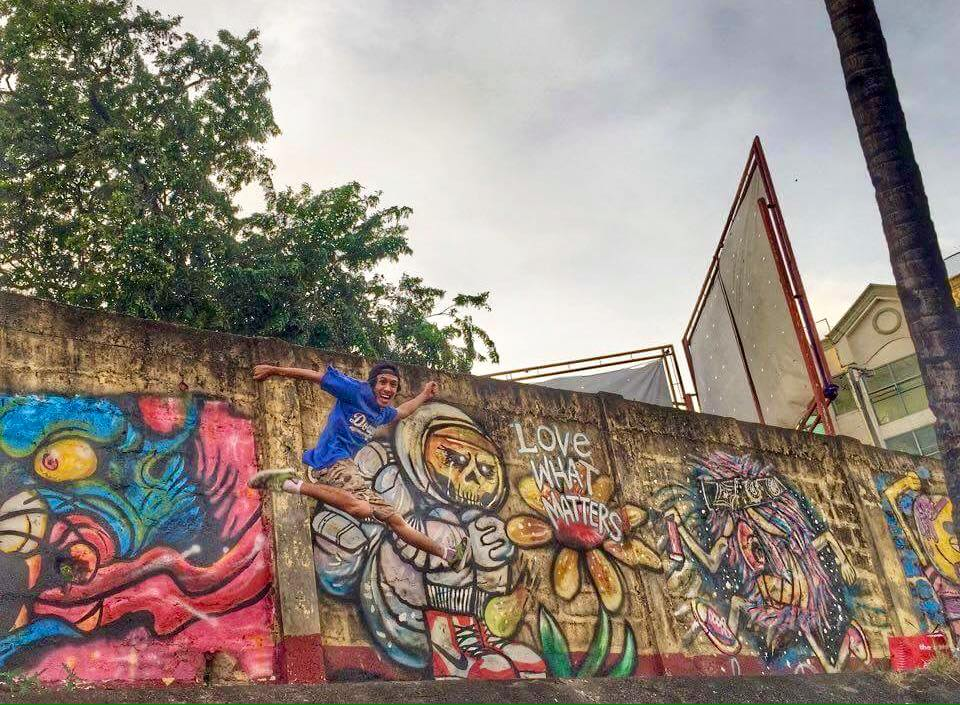
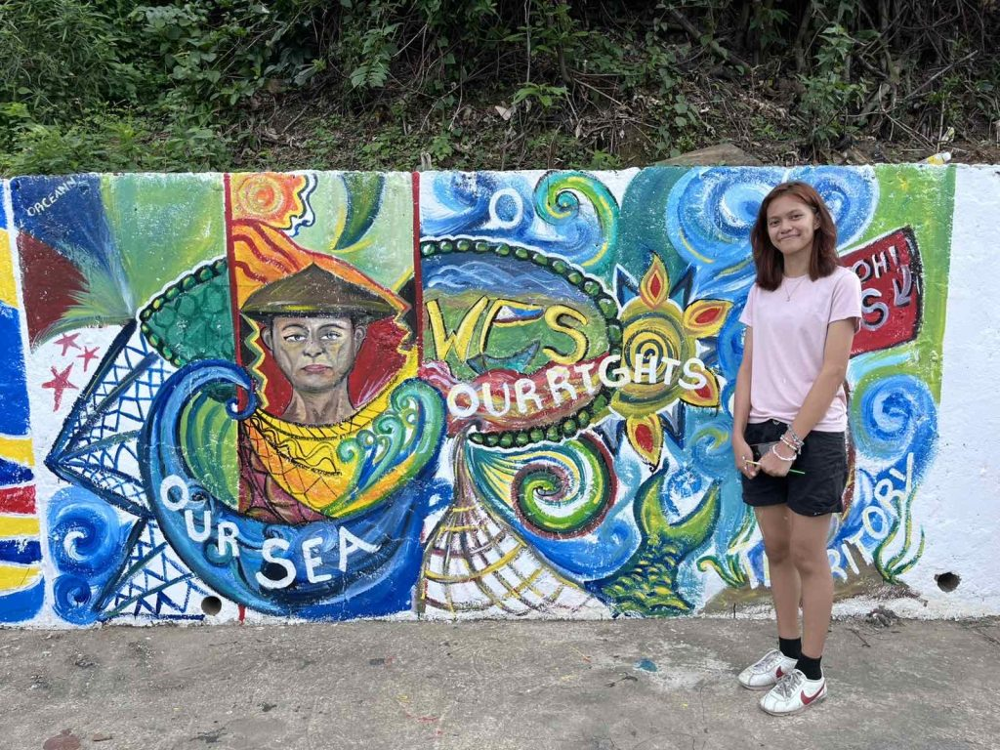

Balanga City
Balanga City Murals
Found along Capitol Drive and city walls, these murals depict local heritage, WWII history, and environmental themes. They serve as both public art and cultural storytelling, blending tradition with modern street style.

Mariveles
Coastal Murals
Painted near community centers and coastal walkways, showcasing fishermen, marine life, and the resilience of locals. These works highlight Bataan’s coastal identity while adding vibrancy to urban spaces.